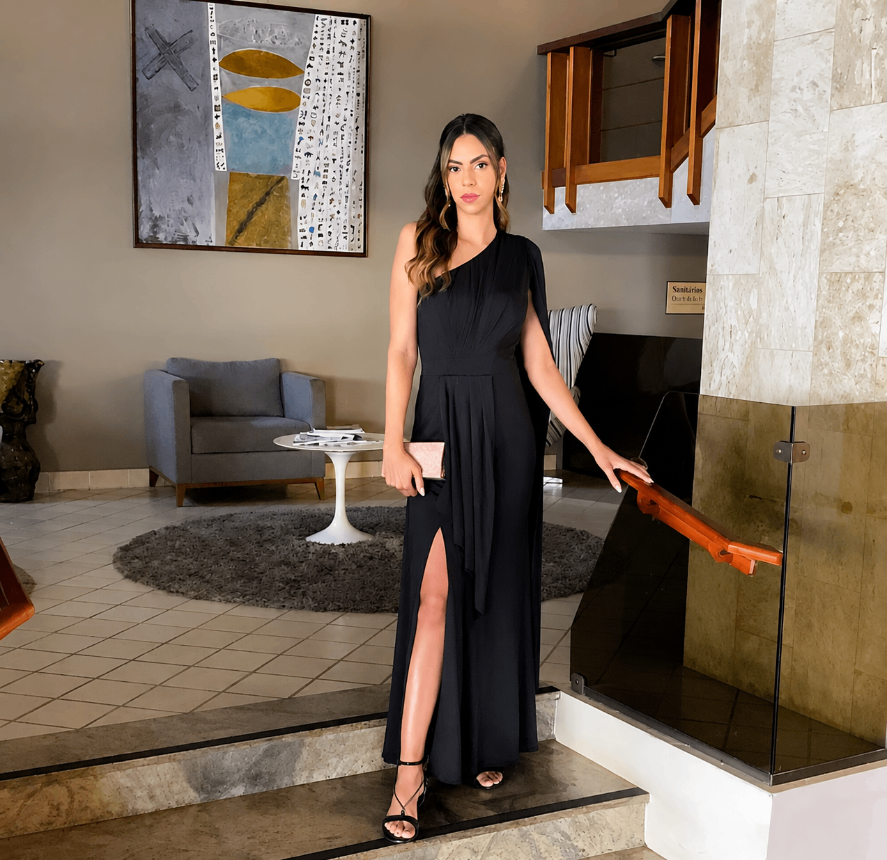

Este acompanhamento pode ser para você se…
- Você tem entre 18 e 40 anos.
- Está começando a carreira ou repensando seus próximos passos.
- Busca mais autoconhecimento e recursos para lidar com as emoções.
Psicoterapia online para adultos
Nem sempre é simples explicar o que pesa. A psicoterapia pode ser um espaço seguro para compreender seus sentimentos e construir novos caminhos, no seu tempo.
Atendimento online no Brasil e no exterior.

Talvez você se reconheça aqui
Não é preciso ter todas as respostas para começar uma conversa.
Sobre Ana Paula
Sou Ana Paula Gonçalves, psicóloga com formação pela FCV e pós-graduação em Terapia Cognitivo-Comportamental pela UNESAV.
Meu trabalho é voltado a adultos que desejam se compreender melhor e lidar com desafios relacionados à ansiedade, identidade, solidão, carreira e relacionamentos.
Conheça meu trabalho pelo WhatsAppO começo pode ser simples
O acompanhamento é construído a partir da sua história, das suas necessidades e do ritmo possível para você.
Você chama no WhatsApp para tirar dúvidas e encontrar um horário.
Os encontros acontecem online, duram 50 minutos e são semanais.
O processo é particular; informações sobre valores são compartilhadas no contato.
Para quem é este espaço
Você busca atendimento para crianças ou adolescentes, terapia de casal ou terapia familiar. Nesses casos, podemos conversar sobre encaminhamento à rede Ampla.mente.
Conversar sobre encaminhamentoDúvidas frequentes
Sentimentos difíceis fazem parte da experiência humana, mas não precisam ser vividos em silêncio. Se algo tem pesado, se repetido ou afetado sua rotina, conversar com um profissional pode ajudar a compreender melhor o que acontece.
Não existe um único momento certo. A psicoterapia pode ser procurada tanto diante de um sofrimento específico quanto quando há desejo de se conhecer melhor. O primeiro contato é um espaço para conversar sobre isso.
A ansiedade tem formas e contextos diferentes para cada pessoa. Em psicoterapia, é possível entender seus gatilhos e desenvolver recursos para se relacionar com ela de uma maneira mais cuidadosa.
Vamos conversar?
Para informações sobre disponibilidade e valores, entre em contato pelo WhatsApp. Respondo de segunda a sexta, das 09h às 18h.